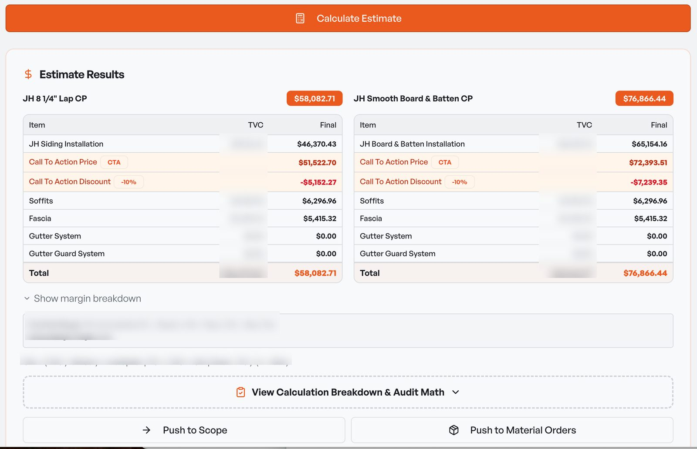
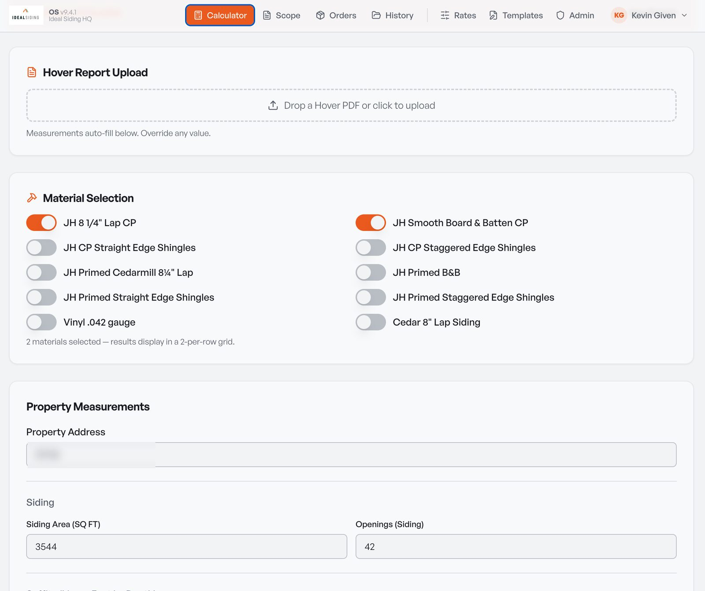
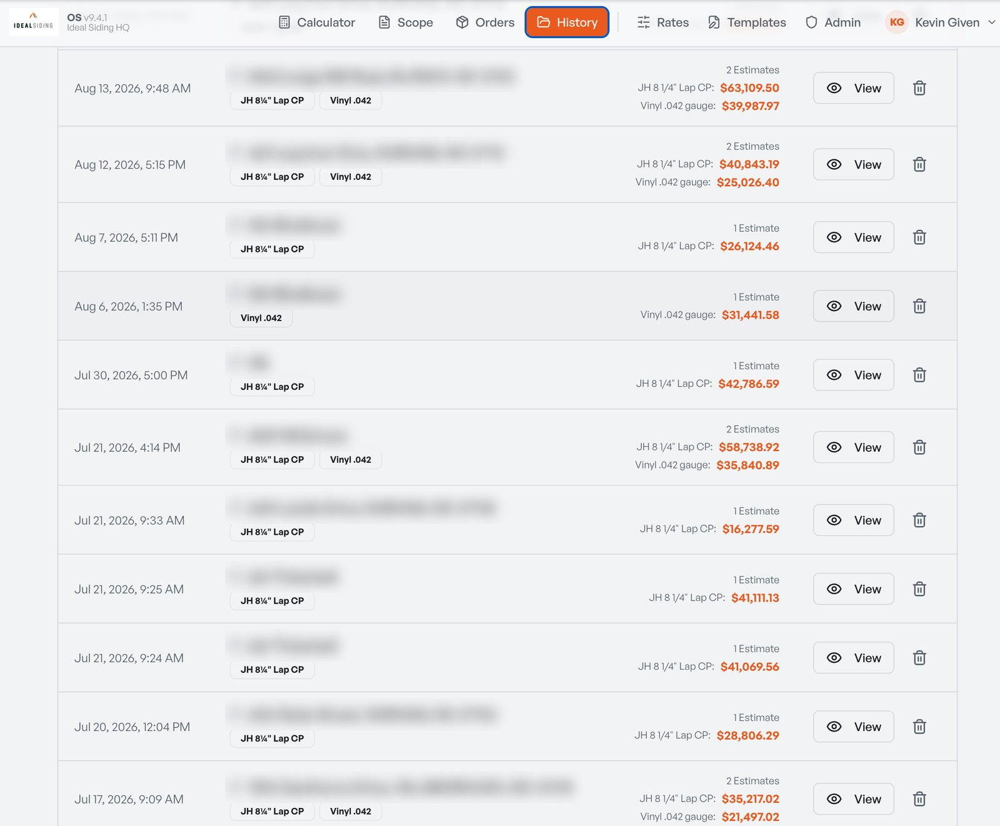
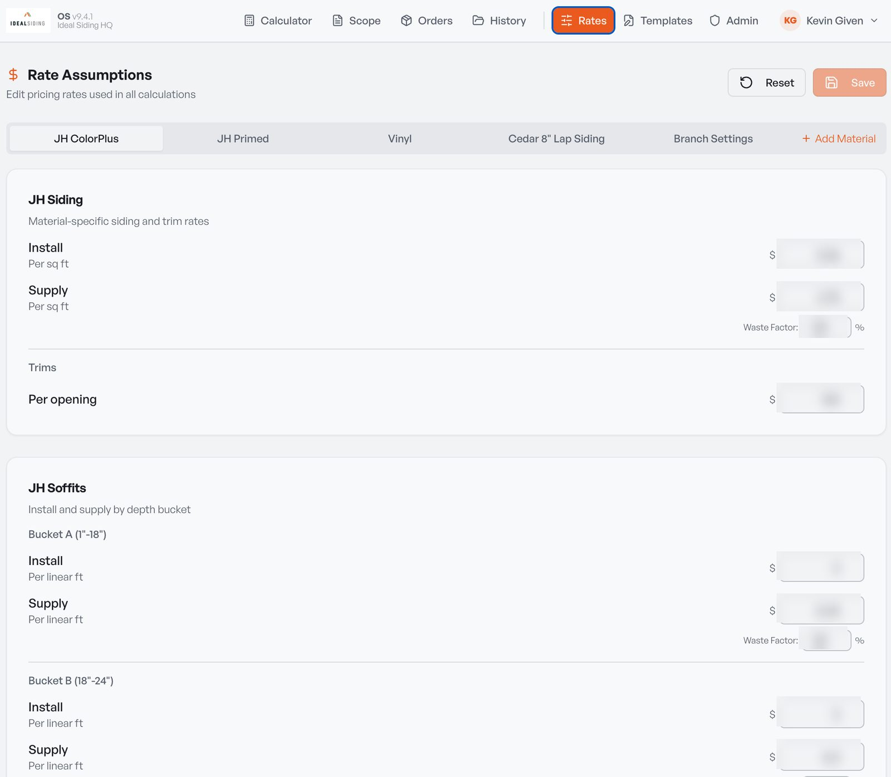
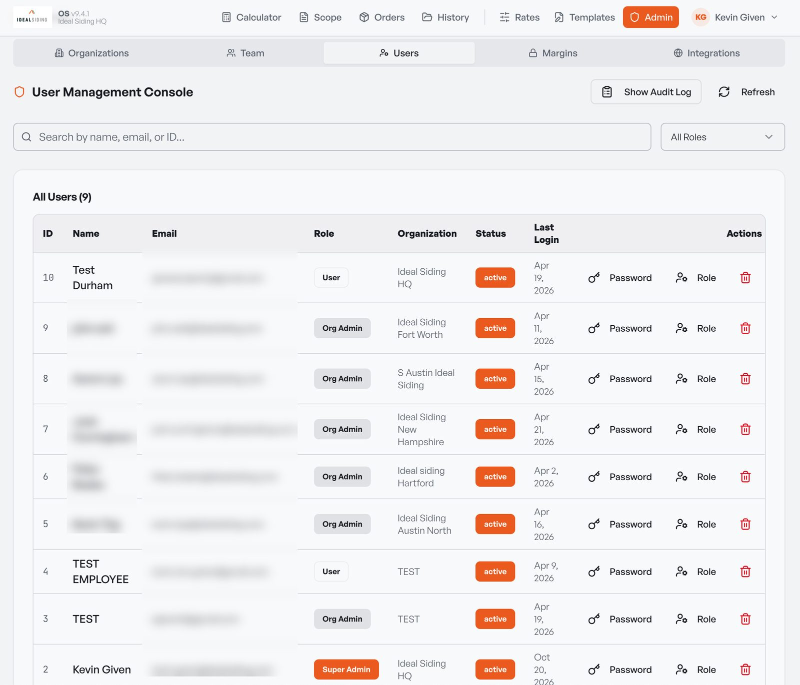

Kevin Given
I grow enterprise accounts, run a business, and build the AI tools that run it.
Nine years in customer success, account management and sales at NGINX (F5) and Oracle. Two years as an owner-operator, taking a new business from zero to $1M. These days a lot of my time goes into building AI systems that do the work of a small team.
Enterprise accounts, then my own company
I spent most of a decade keeping Fortune 500 customers happy and growing at a fast-moving software company, then put the same habits to work building a business of my own.
From zero to $1M in 15 months
- Built the business from a standing start to $1M in revenue in 15 months at a 20% net margin, with 5-star customer satisfaction on every project and a top 20% ranking among roughly 75 franchise locations.
- Built Ideal Siding OS, a multi-tenant quoting and operations platform, with Claude doing the coding. It prices every job, enforces margin floors and pushes estimates straight into scopes of work and material orders.
- Built and run an agentic AI marketing system that writes, designs and schedules posts across our social channels and Google Business profile, with approval gates and automated checks on every post.
- Launched zero-spend AI lead generation: automated referral-partner outreach with a live campaign dashboard, plus a monthly audit of how ChatGPT and Copilot rank the business for local searches.
- Designed a Call To Action pricing program that gives homeowners a real reason to sign inside the standard 30 day quote window. It has closed multiple jobs that would otherwise have sat for months.
- Invited as one of four franchisees to speak on using AI in operations at Ideal Siding's 2026 Annual Conference.
Seven years, five roles, every number beaten
Customer Success Manager III, Named Strategic Accounts (2020 to 2024)
- Owned customer success for Fortune 500 accounts including Comcast, Kaiser, Toyota, Starbucks, Disney, AT&T, American Airlines, HP and Anthem, with books up to $16.5M annualized.
- Beat the retention and growth target every year: 141% in FY20, 229% in FY21, 137% in FY22. Platinum Club 2021, the top 3% of reps company-wide.
- Co-founded the strategic accounts customer success team, built its enablement materials and Gainsight health scoring workflows, and mentored peers.
- Led the migration of $40M ARR and about 2,000 renewals from Customer Success to a new Renewals team: RACIs and workflows for about 200 people, plus training and office hours that onboarded a 75-person global team.
Account Manager I and II (2018 to 2020)
- Managed books of about 120 and then about 60 enterprise accounts, owning renewals, expansion and onboarding. Beat quota every year, 113% to 127%.
Business Development to Enterprise BDR and Inside Sales (2017 to 2018)
- Rookie of the Year FY17. Quota attainment of 148% to 184%, with a 52% meeting-to-opportunity conversion rate.
Where I learned enterprise sales
- Highest won-deal volume on the team and MVP of the Quarter (Q3 FY16), building C-level relationships at accounts with more than $10B in revenue.
A small portfolio on the side
- Six residential properties I own and manage, including a $60K renovation delivered on budget.
Education: B.S. in Business Administration (Finance concentration, Economics minor), California Polytechnic State University, San Luis Obispo, 2015. GPA 3.7.
Ideal Siding OS
I needed estimates that were fast, consistent and profitable, and nothing off the shelf fit how a siding franchise actually prices work. So I built it.
A quoting and operations platform for a siding business
In production since 2025, now on version 9. I use it for every quote.
Ideal Siding OS takes a Hover measurement report, prices the job across several material systems side by side, applies a margin engine that adjusts for season, complexity, crew capacity and job size, and pushes the result straight into a scope of work and a material order. Admins set rates by material and margin floors by employee, and every number has an audit trail behind it.
It is multi-tenant with role-based access, so other franchise locations can run on it. Five have accounts today.
- Hover report import
- Side-by-side material pricing
- Margin engine
- Call To Action pricing
- Scope of work generator
- Material orders
- Rates admin
- Employee margin floors
- Audit math
- Multi-tenant
How it was built
I am not a software engineer. I wrote the requirements, designed every screen and workflow, and built it with Claude doing the coding: a React and TypeScript app, deployed on Railway from GitHub.
Every release gets tested against a fixed real-world scenario before it ships. Nine major versions in, it still has to get that job's margin right to the decimal.
The Call To Action price
Homeowners drag their feet. A siding job is a big decision, and without a reason to decide, a quote can sit for months. The Call To Action price is the best answer I have found. I work out what the job needs to make, set the quoted price so that a 10% discount lands exactly on that number, and give the homeowner the standard 30 day quote window to take it.
The customer gets a real incentive to decide, and I get a number I can plan crews around. It has pulled multiple jobs across the finish line that would otherwise have sat for months, and it is the only call to action I have seen work anywhere in the franchise network. Ideal Siding OS applies it to every estimate automatically, and because every branch controls its own settings, a location that would rather quote without it can switch it off.





Customer details and internal pricing are blurred in these screenshots.
Most of what I build now is automation
I write the spec, Claude writes the code, and I test it the way a customer would. These are the systems running at Ideal Siding today.
An agentic marketing system
An AI system that runs the marketing for my Ideal Siding locations. It adapts the copy for each platform, generates before-and-after and tip graphics in Python, and publishes or schedules posts across our social channels and Google Business profile. Every post passes an approval gate and an automated verification step before it goes out.
Zero-spend lead generation
An automated referral-partner outreach program with a live campaign dashboard, plus directory listing build-outs and neighborhood campaigns on Facebook and Nextdoor. A monthly audit checks how ChatGPT and Copilot rank the business for local searches, so I know where AI search is sending homeowners.
Quote automation for Triangle Fencing Co.
A Python tool, built with Claude, that turns job measurements into a numbered, branded PDF quote in minutes instead of an evening. Same idea as Ideal Siding OS, scaled down to what a small fencing operation needs.
Invited to speak on AI, 2026
One of four franchisees, out of about 75, invited to show the Ideal Siding network how AI can automate and improve a local operation at the 2026 Annual Conference.
How I actually use it
Claude is open on my desk all day. It turns a Hover measurement report into material quantities, drafts customer-facing quote line items and change orders, audits material waste on finished jobs, writes the HR paperwork when I hire, and works through QuickBooks with me. Anything that goes to a customer or an employee gets my edit first.
Four habits that have held up
Write it down
Every account has a written plan with owners and dates. Every call gets notes the same day. If it is not written down, it did not happen.
Never rely on one champion
Admins, team leads and the executive sponsor all know me by the time a renewal comes up. One contact is a risk, not a relationship.
Flag risk early
Nobody should be surprised at renewal. If usage is flat or a rollout has stalled, I raise it months out, with a plan.
Outcomes before expansion
An honest success plan comes first. I bring up growth only when it ties to a result the customer already cares about.
Let's talk
The fastest way to reach me is email. I am on Eastern time and usually reply the same day.